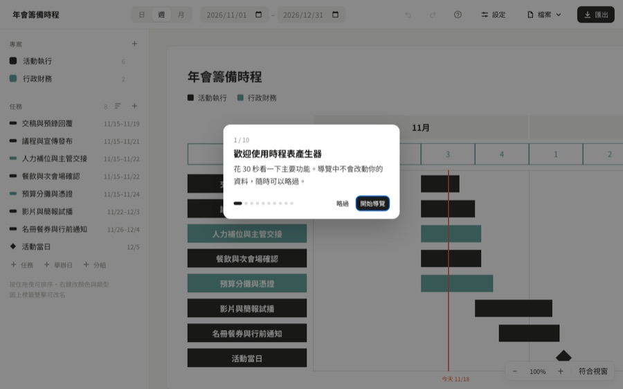
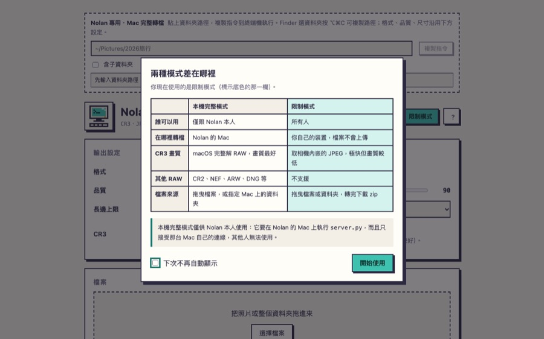
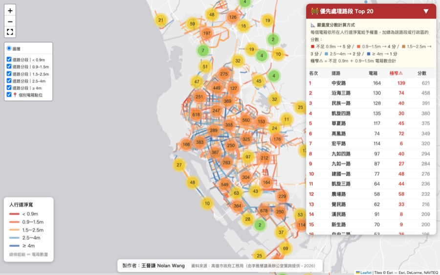
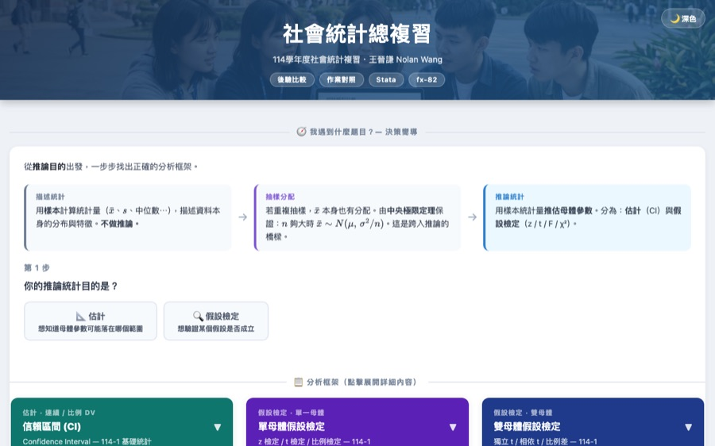

經歷
-
2026大二
- 《2026縣市首長候選人交通改善承諾白皮書》主編
- 2026年全台議員選區互動式地圖 ngtu.org/whitepaper
- Vibe Coding 使用VSCode中的Claude插件製作出下一代人本交通促進會官網：ngtu.org
- 在MoSOR Lab擔任兼任研究助理
- 於2026 g0v分享倡議經驗
-
2025大一
- 與高雄市政府合辦《道出心聲——高雄交通學生論壇》
- 2025年我們發起「525保護下一代大遊行」
-
2024高三
- 全台串聯抗議交通部全面取消罰鍰在1200元以下的交通違規記點
- 下一代人本交通促進會 成立大會 2024.8.20
-
2023高二
- 舉辦722高雄行人路權大遊行 超過兩千人參與 嘖嘖募資達標114% 超過47萬 嘖嘖專案
-
2022高一
- 18歲公民權環島倡議志工
自2026.4.23發佈白皮書以來，到9.21為止，已經有267位候選人、19個跨領域民間團體連署
我們在2024年主辦317行人大富翁，成功將10項微罪項目縮減至5項。
成功在道安會報爭取高雄道明中學後門「憲政路」直接增設實體人行道
主辦高雄道出心聲工作坊，讓南部在地同學能有直接向交通局陳情溝通的管道
與高雄市交通局、鳳山國中合作製作人本交通繪本
2025、2026育成高中地理探究課程進行人本交通教育
工具


